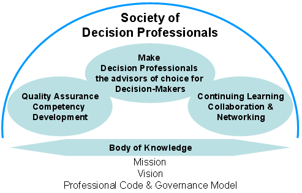

|

|
Why Do We Need a Society of Decision Professionals
The term decision analysis has been part of the corporate and academic
vernacular for the last half century. Despite acceptance of the term,
actual usage of the methodology has not fulfilled its promise. Even when
faced with the most difficult, complex, and risky decisions, the
majority of Decision Makers do not turn to Decision Professionals for
guidance. The reasons for this are many and varied, but it is clear that
the profession has not been effective at conveying the value
proposition and many Decision Makers have not even heard of Decision
Analysis. Without a clear voice speaking for the profession as a whole,
it is unlikely that the situation will change. This is what the Society
of Decision Professionals aims to address.
However, simply making Decision Makers aware of the profession is not
enough; we need to create the infrastructure and interconnections to
support the development of the Society. The Society must create clear
distinctions of competence and value creation in the minds of
Decision Makers to be successful in creating a step change in
understanding and adoption. It is not unreasonable for a Decision Maker
to stipulate that a Decision Professional be accredited to assist on the
most important decisions the Decision Makers face. As a profession we
need to create standards and expectations of quality, ethics, and value
to be delivered so that Decision Makers are comfortable that the people
they turn to are suitably qualified, have the right level of experience
and will genuinely help them. This implies that the Society needs to
define a body of knowledge that constitutes the core of the profession
and declare a code of ethics that we can all subscribe to.
The Society will foster collaboration, continual learning and
networking amongst its members and other professional societies and
organizations so that as a growing community we can truly serve the best
interests of the Decision Maker. Finally, the Society of Decision
Professionals will collaborate with the Decision Analysis Society in
taking the latest developments in the field of Decision Analysis into
practical application, thereby ensuring the sustainable long-term
development of the field of Decision Analysis as a whole.
The Society of Decision Professionals
Vision
Decision Professionals are the advisors of choice when facing important and complex decisions.
Mission
Members of the Society of Decision Professionals will create greater
value for organizations, individuals, and stakeholders. We will:
- Bring Decision Quality to important and complex decisions
- Provide quality insights and direction through the use of practical tools and robust methodologies
- Promote high professional standards and integrity in all work done by decision professionals
- Advance the profession to the benefit of humankind through helping Decision Makers
Goals
To achieve the Society’s mission, the Society’s goals will be:
- Promote the profession as the advisors of choice for Decision Makers, and serve the public interest:
- Be an internationally recognized focus for promoting and facilitating high quality decision making
- Share general speeches and undertake activities that introduce the public to the field
- Organize a Decision Quality Speakers Bureau
- Engage with entities that are promoting Decision Quality within society, such as the Decision Education Foundation
- Facilitate the application of appropriate decision making techniques
into areas where they are not currently used, or are used
ineffectively, but may be of benefit
- Establish, uphold and advance high standards of professional competency:
- Define a body of knowledge that constitutes the core of the Profession
- Design a process for certifying the professional level of members
- Provide a forum for revising certification standards
- Provide a forum for resolving disputes about malpractice
- Foster continuing learning, collaboration, and networking within its membership:
- Share best practices in all areas of professional practice
- Work with the Decision Analysis Affinity Group and the Decision
Analysis Society of INFORMS to bring forward new areas of application
- Engage with partner organizations that support the needs of Decision Makers
- Share development, training, education and career opportunities
|